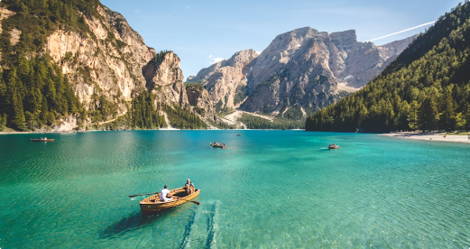
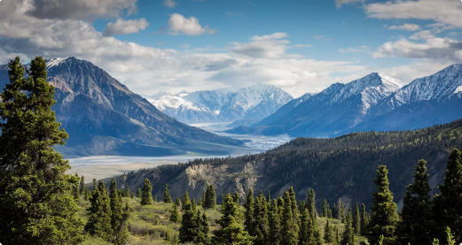

Mountains offer peace, fresh air, and breathtaking views. They are perfect for travelers who enjoy nature and quiet environments.
Popular mountain destinations include the Himalayas, Alps, and Rockies, where people go hiking, camping, and exploring nature trails.

